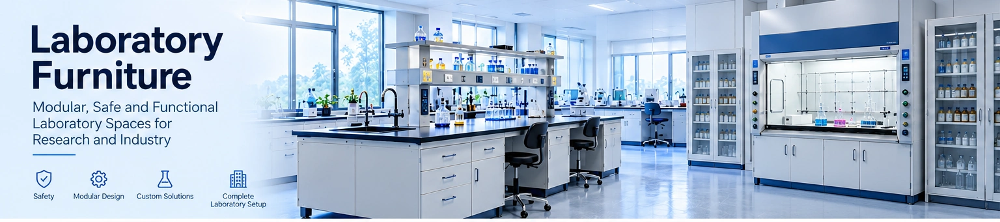

Furniture engineered around the laboratory.
GMC Technology now offers laboratory furniture and infrastructure alongside reactors, glassware and specialized research equipment — bringing workstations, fume hoods and storage into one coordinated laboratory solution.

From a single workstation to a complete laboratory fit-out.
The range is designed as a configurable system. Dimensions, materials, storage, services and layouts can be adapted to the laboratory, equipment and workflow.

Fume Hoods
Project-configured chemical fume hoods for synthesis, analytical work and laboratories involving hazardous chemical fumes or vapours.
View furniture products →
Benches & Workstations
Wall benches, island tables, instrument workstations and wet-area furniture coordinated around laboratory workflow.
View furniture products →
Chemical & General Storage
Chemical storage cupboards, overhead cabinets and tall storage units for organized laboratory materials and consumables.
View furniture products →Containment begins with the application.
A chemical fume hood is a ventilated enclosure intended to remove chemical fumes, vapours and aerosols from the work area. Its containment performance depends on airflow, sash position, hood geometry, baffles, exhaust arrangement and the surrounding laboratory air balance.
Configure enclosure materials, services, sash and exhaust around the chemicals, reactions and heat load involved.
Consider equipment footprint, service access, operator movement and exhaust requirements.
Where chemical hazards are present, a chemical fume hood may be appropriate; biological containment requires the appropriate biosafety cabinet rather than substituting a chemical fume hood.
Safety, performance and installation are part of the specification.
For project specifications, GMC can work with the applicable fume-hood, laboratory-furniture and installation standards. Relevant references include SEFA 1 for laboratory fume hoods, SEFA 8M for metal casework and ASHRAE 110 for quantitative fume-hood containment testing.
For biological work, the laboratory risk assessment and the appropriate biosafety cabinet requirements should be established separately.
Discuss project requirementsBuild the laboratory around the way the science is performed.
Work surfaces
Select chemical, thermal, mechanical and cleaning characteristics appropriate to the work being performed.
Casework & storage
Coordinate base cabinets, drawers, overhead storage, tall cabinets and chemical storage with the workflow.
Utilities
Integrate electrical, water, drainage, gas and other laboratory services where required by the installation.
Equipment integration
Plan furniture around reactors, analytical instruments, balances, glassware, hoods and other GMC systems.
Need furniture, equipment and custom systems together?
GMC can use the laboratory requirement as the starting point for a coordinated furniture and scientific-equipment proposal.